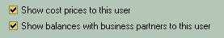

In the main section you define the login or username of the user which he or she will use at the login form, then the full name just for your convenience and at last the password and password confirmation that both should be absolutely identical.
For better security consider the following standard rules for making a good password:
It should not be a short or well-known word that anyone with time on hand could guess just by typing variants. So for example the "password" or "123" is very bad ones.
The good password should consist of several digits and mixed case letters. Here is the bad ones - "password" and "123" could be transformed into the good one - "PasSworD7219"
The next part is the table of access rights for each type of document or software section. These are called modules in common.
Browse - User can browse through the lists of documents or entities (it's various directories, such as products, warehouses, business partners, banks, etc).
Add - User can add new documents or entities.
Edit - User can edit individual documents or entities.
Delete - User can delete individual documents or entities
Post is used for documents only and means that user can toggle posted state for the individual documents
The next pages is warehouse and financial options
Here you mark which warehouses will be individually accessible to user.
This way you can grant to a person a full access to the documents, but limit the access to warehouses or shopping places, so the manager on the shopping point will e able to sell goods only from this point own warehouse.

The next page is for basic financial security:
Show cost prices will hide if unchecked the incoming prices for the goods, so the employee will not know how much it costs for you. He or she will see only the sale prices.
So the show balances is - the user will know or not how much you owe to the partners or they owe to you.